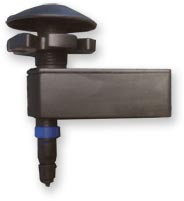

RECON’s WaterWays™ is a multi-purpose platform that not only reads water meters, but performs many of the functions of traditional SCADA and GIS systems, only without the added cost of expensive wireless gear and software to purchase and maintain.
Remote Automated Meter Reading
Using WaterWays™ endpoints with your encoded meters, you get all the benefits of a traditional fixed base wireless AMR solution.
Here’s how it works:
ViewPort Wireless establishes a service area that coincides with your water service area.
Connect a WaterWays™ end-point to each of your encoded meters, activate them using a standard web browser, and that’s it!
WaterWays™ endpoint
Features
- Backflow detection
- Leak detection
- Tamper notification
- Temperature alerts
- Compatible with all leading encoded registers
- Flexible meter reading and data transmission schedules
- Long battery life – 20 years or more
Data Acquisition
In addition to reading water meters, the RECON solution performs a myriad of other functions traditionally performed by SCADA systems, such as:
- alerting that a critical pump has stopped or started
- that a valve is opened or closed
- monitoring and reporting the accumulated run-time of machinery and equipment
- alerting that a remote facility has been accessed after hours
- alerting that water pressure is higher or lower than a predetermined value
Location and GIS
Water meters and other data acquisition sensors can be affixed to a map, enabling fast location of the device and simple configuration using a standard web browser.
Additionally, if location services are supported in the ViewPort Wireless service area, assets can be tracked in real-time enabling you to determine a variety of important updates remotely:
- if a critical piece of equipment is on the jobsite at the right time
- if snow removal equipment is on the correct route
- which maintenance crew is closest to an incident